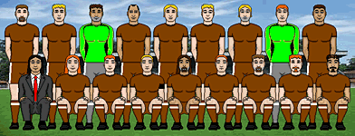

Борис Маца
2-й тур, 27 сентября
Центральный матч: FС Zivju Fileja - Vot tak smrad
Центральным матчем второго тура также выбран поединок группы Щ, в котором будут сражаться дебютанты Кубка Колотиловки - "рыбники" и "коричневые". Фактически, победитель обеспечит себе место в четвертьфинале, в то время как проигравшему после этого придется совершить подвиг, чтобы избежать сражения при Соплях. В случае ничьей интрига в группе Щ будет жить до самого последнего тура, поскольку очень наверняка в дело вступит разница забитых и полученных шайб.
Отметим, что соперники очень молоды, и им еще только предстоит узнать, что такое вкус больших побед в предпоследней лиге Латвии и выход в 3-й круг абсолютно никчемного кубкового турнира. "Zivju Fileja" существует более полутора сезонов. В своей единственной полноценной кампании в 6-й лиге "филейщики" заняли пятое место. В Кубке Латвии клуб оба раза терпел фиаско уже в первом круге. "Vot tak smrad" появился на свет всего месяц назад. На выходных "пахучие" добились самого громкого достижения в истории, одержав первую победу в официальных матчах. Команда дома разгромила "fk rasta" с результатом 3:0. До этого в четырех встречах лиги дружина Педро Алмейды вырвала лишь одну ничью. "Рыбники" и "коричневые" ни разу не встречались между собой, зато очень до хУя раз играли другие представители этих стран. О-о-о-о, что это были за матчи. Но, по счастью, я здравый и адекватный человече, а потому не буду упоминать и 6% от вышеуказанных противостояний. "Zivju Fileja" традиционно исповедуют схему 4-4-2, в то время как "Vot tak smrad" очень часто меняет тактическую расстановку. Впрочем, самым популярным выбором наставника "коричневых" все равно остается 4-4-2.
Первый тур Кубка ворошиловки (старуха Шапокляк) "Vot tak smrad" пропускал согласно расписанию. В свою очередь, "Zivju Fileja" в дебютном матче на выезде проиграла трехкратному победителю турнира "Bender Selection" с результатом 0:3. Пропустив первый гол уже на 14-й минуте, "филейщики" затем достойно бились почти час, сохраняя почетный счет на табло. Однако на 73-й и 75-й минутах они позволили "бендеровцам" дважды проверить на прочность сеть врат Сидара Ледаковича. В то же время, "Zivju Fileja" сделала серьезную заявку на Трофей Громилы - сразу три футболиста гостей получили желтые карточки, а двум игрокам "Бендера" пришлось досрочно покинуть поле и отправиться в больницу, где они до сих пор лежат на кушетках, читают газеты и разгадывают кроссворды, а также ежедневно сдают анализы мочи и говна. Учитывая столь отлаженную костоломную игру "рыбников, тренеру "коричневых" стоит задуматься - нужно ли выпускать на поле основных игроков против таких буйволов?
На выходных "филейщики" в гостях обыграли довольно крепкую команду "sviests" - 2:0. Подопечные Оцоколича действовали по схеме 4-4-2, не уделяя особое внимание какой-либо из стратегий. По голу записали на свой счет Денис Каменский и Янис Вурчс. В результате "Zivju Fileja" поднялась на второе место в лиге, а вышеупомянутый полузащитник Вурчс с пятью голами занимает 4-е место в табели о бомбардирах. Как уже говорилось, "Vot tak smrad" одержал первую победу в официальных матчах, выиграв с результатом 3:0. "Смрадники" выбрали расстановку 3-5-2, предельно насытив центр поля. По разу ворота "растаманов" поразили Джермейн Купэ, Луис Алава и Фрэнсис Чавес, причем последний на выходных был продан в заурядный клуб из какой-то там Гваделупы за 12 тысяч латвийских денежных единиц. "Vot tak smrad" поднялся на 4-е место в лиге. Крайний хавбек Алава с двумя мячами - самый результативный в составе команды в матчах чемпионата Латвии.
"Zivju Fileja" в отчетном матче не может рассчитывать на травмированного хавбека Филимона Студзянока. Кроме того, лишь недавно оправился от травмы и вернулся в строй финский голкипер Мика Тяхкявуори, который находится не в самой лучшей форме. Думается, тренер "рыбников" решит подождать, пока финн выздоровеет полностью, тем более, что пока прекрасно выглядит его дублер Ледакович. В лазарете "коричневых" поболе пациентов - точно не сыграет Пер Эйнарссон, лишь недавно вернулись в строй после травм Хоакин Англарилл, Кандиду Матеуш, Анрийс Бугайнис и Джермейн Купэ. Силы команд приблизительно равны, поэтому все решит один гол. Или четыре.
FС Zivju Filejа: Ledakovich - Zmijan, Viduskalns, Rose, Nemkov - Kamenskiy, Tramdans, Barbaro, Vurcs - Osmanis, Gapski.
Vot tak smrad: Bolonin - Meire, Kudulis, Bugainis, Emanuels - Romisch, Veiga, Dahlstrom, Reisch, - Starkovs, Coupe.
Небольшое преимущество у "Zivju Filejа", к тому же, тренер "коричневых" не раз публично заявлял, что ему похуй на результаты турнира, и он с радостью променяет свое название на более сопливое. Хотя, конечно, это может быть и очень пиздатая попытка усыпить бдительность оппонентов. Тем не менее, Футбольный Знайка, перед тем, как въебать 400 грамм коньяка и упасть в углу в позе ветоши, написал на смятом газетном листе: "2:1 в пользу хозяев".

Команда "Vot tak smrad".
Верхний ряд: Alfons Starkovs, Anrijs Bugainis, Benjamin Pacull, Candido Mateus, Fabio Nardella, Jermaine Coupe, Lando Romisch, Oskar Bolonin, Pal Frigyes
Нижний ряд: Pedro Almeida (тренер), Raitis Kudulis, Rindert Emanuels, Rudolf Shustrikov, Tiago Veiga, Toader Badea, Wolfgang Reisch, Xesus Meire, Yann Billet.
По конспиративным причинам на фотографии отсутствует Luis Alava. Да и вообще, это единственный игрок "смрада", который вместо того, чтобы позировать журналистам, потом и лимфой отрабатывает свой хлеб на тренировках.